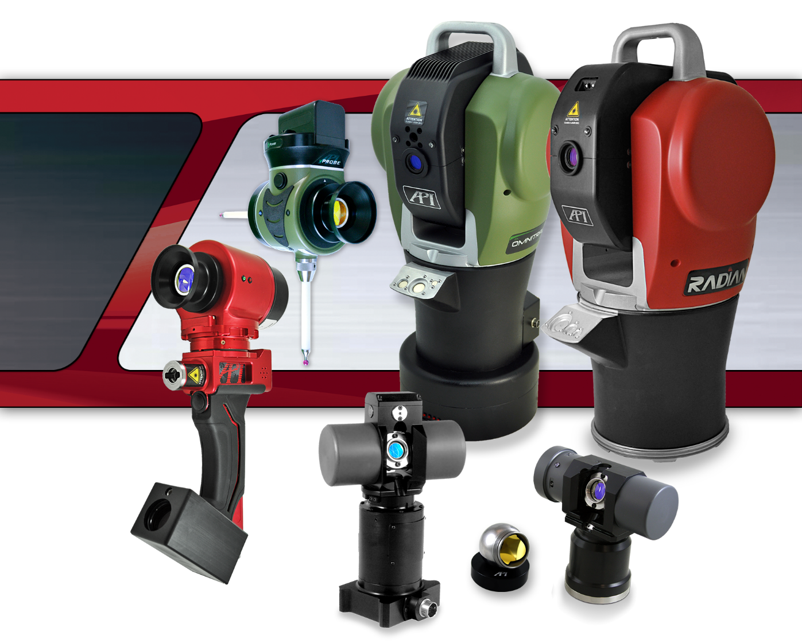

|
Laser Tracker
7.18.0.0
Laser Tracker Interface Programming Manual
|
|
Laser Tracker
7.18.0.0
Laser Tracker Interface Programming Manual
|

This document defines the software interface for the API Laser Tracker device.
The device interface provides various functions for API device. These functions will help in connecting to the API device, performing basic operations like Virtual Level, Jogging, iVision operations, Homing, etc.
Under Windows operating system, this interface is primarily developed using Visual Studio 2017.
Linux gcc compiler and Apple Clang 15.0 are also supported
Generally all the interface functions will adhere to these units unless explicitly specified.
Please install the following packages
Please install the following packages from homebrew
Copyright by Automated Precision, Inc.
Document generated by Doxygen